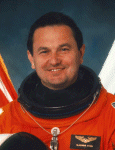

Lyndon B. Johnson Space Center
Houston, Texas 77058
|
National Aeronautics and Space Administration Lyndon B. Johnson Space Center Houston, Texas 77058 |
 |
Biographical Data |
||
VLADIMIR GEORGIEVICH TITOV
(COLONEL, RUSSIAN AIR FORCE, RET.)
RUSSIAN COSMONAUT (FORMER)
PERSONAL DATA: Born January 1, 1947, in Sretensk, in the Chita Region of Russia. Married to the former Alexandra Kozlova of Ivanovo Region, Russia. They have two children. He enjoys tennis, hunting, and spending time with his family. His mother, Vera Titova, resides in Star City, Russia. His father, Georgie Titov, died in 1961. Her parents, Ruric and Alevtina Kozlov, reside in Ivanovo Region.
EDUCATION: Graduated from secondary school in 1965, from the Higher Air Force College in Chernigov in the Ukraine in 1970, and the Yuri Gagarin Air Force Academy in 1987.
SPECIAL HONORS: Awarded the title of Hero of the Soviet Union, and recipient of the Order of Lenin (1983, 1988). In 1988, the French awarded him the title of Commandeur de la Legion dHonneur, and in 1990 he and Manarov were awarded the U.S. Harmon Prize -- the first Soviet citizens to win the award -- in recognition of their world endurance record.
EXPERIENCE: In 1966, Vladimir Titov enrolled at the Higher Air Force College in Chernigov in the Ukraine, graduating in 1970. Until 1974, he served at the College as a pilot-instructor and was responsible for the graduation of twelve student pilots. He later served as a flight commander with the air regiment where the cosmonauts carry out flying practice. He has flown 10 different types of aircraft, has logged more than 1,400 hours flying time, and holds the qualifications of Military Pilot, 1st Class, and Test Pilot, 3rd Class.
Vladimir Titov was selected to join the cosmonaut team in 1976, and in September 1981 was paired with Gennady Strekalov. The two men served as the back-up crew for Soyuz T-5 in 1982 and Soyuz T-9 in 1983. A veteran of five space flights, Titov served as commander on Soyuz T-8 and Soyuz T-10 in 1983 and Soyuz TM-4 in 1987, and flew on the crew of STS-63 in 1995 and STS-86 in 1997. He has logged a total of 18 hours, 48 minutes of EVA, and has spent a total of 387 days, 52 minutes, 18 seconds in space (including the Soyuz T-10 launch abort).
Titov made his first space flight on April 20, 1983, as commander of Soyuz T-8. He and Strekalov had been specifically trained to repair the faulty Salyut 7 solar array. He was supposed to dock with Salyut 7, but once in orbit the Soyuz rendezvous radar antenna failed to deploy properly. Several attitude control maneuvers at high rates were made but failed to swing the boom out. (The postflight inquiry later discovered that the antenna had been torn off when the Soyuz payload shroud separated.) With FCC permission, the crew attempted a rendezvous using only an optical sight and ground radar inputs for guidance. During the final approach, which was made in darkness, Titov believed that the closing speed was too great. He therefore attempted a braking maneuver, but felt that the two spacecrafts were still closing too fast. He aborted the rendezvous to avoid a crash, and no further attempts were made before the three men returned to Earth after a flight lasting just 2 days, 17 minutes, 48 seconds.
Titov and Strekalov were then scheduled for launch on board what should have been Soyuz T-10 on September 27, 1983. However, a valve in the propellant line failed to close at T-90 seconds, causing a large fire to start at the base of the launch vehicle only one minute before launch. The fire quickly engulfed the rocket, and the automatic abort sequence failed as the wires involved burned through. Two launch controllers manually aborted the mission by sending radio commands from the launch blockhouse. This was accomplished 12 seconds after the fire began. The Soyuz descent module was pulled clear by the launch escape system, and after being subjected to 15-17 Gs, the crew landed safely some 2.5 miles (4 km) from the launch vehicle, which apparently exploded seconds after the Soyuz separated. The two men were given a medical check-up, but had sustained no injuries during their brief flight which lasted 5 minutes, 30 seconds.
Titov was next assigned to command Soyuz TM-2. He and his flight engineer, Alexander Serebrov, were scheduled for a long-duration flight on board Mir 1. Six-days prior to launch, due to doubts about Serebrovs health, they were replaced by the back-up crew. Titov continued training for a long-duration mission, and in April 1987 was paired with Musa Manarov. Later that year, he graduated from the Yuri Gagarin Air Force Academy while continuing his work at the Yuri Gagarin Cosmonaut Training Center.
His next assignment came as the commander of Soyuz TM-4, which launched on December 21, 1987. Together with Musa Manarov and Anatoli Levchenko, he linked up with the orbiting Mir 1 space station and her crew. After a short period of joint work, Romanenko, Alexandrov, and Levchenko returned to Earth handing over the space station to Titov and Manarov. The two men settled down to a long program of scientific experiments and observations, and played host to the visiting Soyuz TM-5 and TM-6 missions. At the end of the Soyuz TM-6 visit, one of its crew, Dr. Valeri Polyakov, remained on board with Titov and Manarov.
On February 26, 1988, the two cosmonauts carried out an EVA lasting 4 hours and 25 minutes, during which they removed one of the sections of the solar panel and installed a new one. They also installed some new scientific experiments and removed samples of material that had been left exposed to open space, and inspected the Progress 34 spacecraft.
On June 30, 1988, they attempted a repair on the Roentgen X-ray telescope. The telescope had not been designed for repair or replacement so the EVA was a difficult one. As they sliced through the 20-layer thick thermal blanket to expose the telescopes faulty X-ray detector unit, the two men had to stop and rest several times, as they had nowhere to anchor themselves, and had to take turns holding each other steady. Their bulky gloves made removing the small bolts very difficult, and it took 90 minutes instead of the 20 allocated. When a special wrench they were using suddenly snapped, the EVA had to be aborted, and the two men returned inside the Mir, having spent 5 hours, 10 minutes in open space.
On October 20, 1988, repairs were successfully completed, and the X-ray telescope recommenced operations. The cosmonauts also installed some anchor points for the EVA scheduled for the joint Soviet-French mission, installed a new shortwave aerial, and took samples of a film which had formed over one of the portholes, before returning inside the Mir after 4 hours and 12 minutes. They then settled down to their program of experiments and observations. In November 1988, they played host to the joint Soviet-French mission. After three weeks of joint work, Titov and Manarov returned to Earth together with the French cosmonaut Jean-Loup Chretien. Titov and Manarov returned to Earth after a mission lasting 365 days, 22 hours, 39 minutes, setting a new record, and exceeding one year in space for the first time.
On October 28, 1992, NASA announced that an experienced cosmonaut would fly aboard the STS-60 Space Shuttle mission. Titov was one of two candidates named by the Russian Space Agency for mission specialist training at the Johnson Space Center. In April 1993, he was assigned as back-up mission specialist for Sergei Krikalev, who flew on STS-60 the first joint U.S./Russian Space Shuttle Mission (February 3-11, 1994). In September 1993, Titov was selected to fly on STS-63 with Krikalev training as his back-up.
From February 2-11, 1995, Titov was a mission specialist aboard the Orbiter Discovery, on STS-63, the first flight of the new joint Russian-American Space Program. Mission highlights included the rendezvous with the Russian Space Station, Mir, operation of Spacehab, and the deployment and retrieval of Spartan 204. In completing this mission, he logged an additional 8 days, 6 hours, 29 minutes in space.
Titov served on the crew of STS-86 Atlantis (September 25 to October 6, 1997) NASAs seventh mission to rendezvous and dock with the Russian Space Station Mir. Highlights included the exchange of U.S. crew members Mike Foale and David Wolf, the transfer to Mir of 10,400 pounds of science and logistics, and the return of experiment hardware and results to Earth. Vladimir Titov and Scott Parazynski performed a 5 hour, 1 minute spacewalk during which they retrieved four experiments first deployed on Mir during the STS-76 docking mission, tethered the Solar Array Cap for use in a future Mir spacewalk to seal any hole found in the hull of the damaged Spektr module, and evaluated common EVA tools which may be used by astronauts wearing either Russian or American-made spacesuits. Mission accomplished in 169 orbits in 10 days, 19 hours, 21 minutes.
Vladimir Titov retired from the Air Force and the Russian Space Agency in 1998. He currently works for Boeing, Moscow.
OCTOBER 2002
This is the only version available from NASA. Updates must be sought direct from the above named individual.
{kind=link}